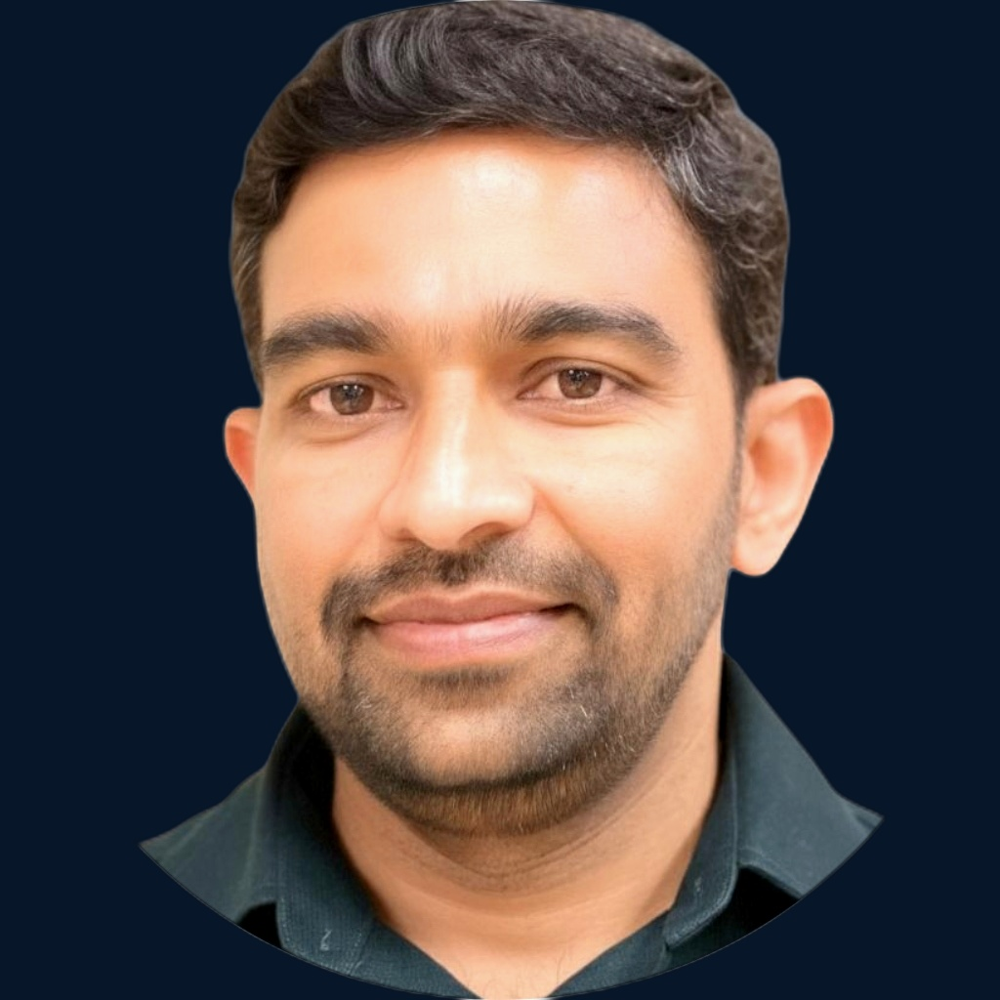

Senior Agile Delivery Lead — Cloud, DevOps & Platform Engineering Teams
18+ years in enterprise IT, 8+ in Agile delivery leadership. I lead multi-team Agile delivery for cloud, platform, and enterprise applications — turning cross-team dependencies and risks into predictable, on-time releases across manufacturing, healthcare, and regulated environments.

Senior Agile Delivery Lead with 18+ years in enterprise IT and 8+ in Agile delivery leadership. I coordinate delivery across 6+ Scrum and Kanban teams for cloud platform migrations, enterprise application rollouts, and regulated healthcare infrastructure — managing dependencies, risks, and release readiness across Product, Engineering, QA, and Platform teams.
My approach is grounded in structured dependency mapping, capacity-based forecasting, and release governance. I facilitate PI Planning, Scrum of Scrums, and cross-team retrospectives to surface blockers early, align priorities between business and engineering, and keep commitments realistic and measurable.
Results across roles:
Multi-team Agile delivery for cloud, platform, and enterprise applications — managing dependencies, capacity, risks, and release readiness across 6+ teams and 3 industry verticals.
Leading 6+ Scrum and Kanban teams through PI planning, sprint execution, and release coordination — improving time to market by 25%.
Aligning Product, Engineering, Architecture, QA, and Platform teams on shared priorities — reducing planning conflicts by 20% through structured cross-team dependency mapping.
Identifying cross-team dependencies and risks early through dependency mapping and risk registers — resolving blockers within sprint cycles across 6+ teams.
Using capacity analysis, velocity trends, and throughput metrics in Jira and Azure DevOps to set realistic sprint commitments and PI forecasts across 6+ teams.
Coordinating Engineering, QA, Platform, Security, and Operations for release readiness — reducing production defects by 25% through earlier testing and a strengthened Definition of Done.
Building and tracking velocity, cycle time, throughput, and sprint health dashboards to identify delivery risks early — enabling proactive intervention before commitments slip.
The frameworks, tools, and engineering environments I work with across cloud, platform, and enterprise application delivery.
Agile delivery leadership across enterprise, cloud, platform, manufacturing, and regulated healthcare environments.
Two delivery case studies from enterprise cloud platform and business application environments — showing how I managed dependencies, coordinated stakeholders, and drove release readiness.
Led delivery coordination for the Sitecore CMS migration of outokumpu.com — a global corporate web platform for a stainless steel manufacturer. Managed planning, cross-team dependencies, testing coordination, and release readiness across multiple teams.
Coordinated SAP CRM delivery across business and technical teams — managing sprint planning, testing coordination, cross-team dependencies, and stakeholder alignment for enterprise CRM application rollouts.
Bengaluru University, India
SV University, Tirupathi, India
Scrum Alliance
Scaled Agile, Inc.
Open to Senior Scrum Master, Agile Delivery Lead, and Technical Delivery Lead opportunities across Finland, the Nordics, and Europe. Available for permanent and contract roles.